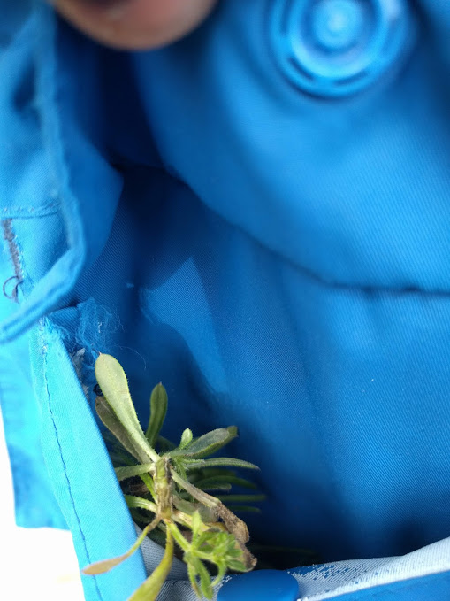

A new herbal plant has been found at beal. It has anti-ageing properties. But it has a side effect it can stick to objects. If you want to obtain some please contact Raheel and he will totally not make you go high. 